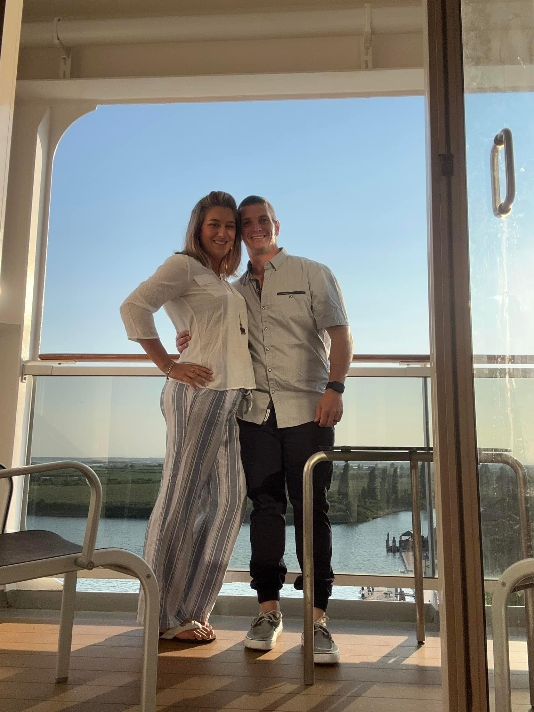

Welcome!
Greetings to all new visitors! I'm Sami, and I've embarked on the exciting venture of documenting my travels within and beyond the USA through this blog. With a passion for exploring on a budget, I consider myself well-rounded and believe in the mantra that less is more. Living in the moment and savoring every detail is my philosophy, and I wholeheartedly believe that smiles make the world go round! If you're seeking tips or tricks from the places I've ventured so far, be sure to check out my posts. Feel free to connect via email or follow me on social media—I'd love to assist in any way possible for your upcoming adventures!
Currently, I'm in the process of planning some exciting trips for the next year. As these journeys draw near, I'll be sharing insights into how I discover tricks and snag deals. Thank you for taking the time to visit my page! I genuinely hope you continue to join me on my adventures, finding joy in the uniqueness and authenticity of my travels and posts. Here's to many more shared journeys!
About Me
At 31 years young, I call the sunny Tampa Bay Area in Florida home, residing just a mile from the breathtaking Gulf beaches. Recently, I embarked on a beautiful journey of marriage with my best friend and soulmate, Justin, now Forever PITTS! Our story began on my 30th birthday, where our connection was instantaneous, leading to a stunning wedding surrounded by the love of friends and family. I feel incredibly blessed. Having traveled to various destinations on spontaneous solo adventures, I've relished every moment. However, my heart finds joy in exploring alongside a companion. A lover of engaging conversations, I cherish connecting with people in every place I visit. My passions include music, photography, crafts, and my Standard Poodle, Miss Khloe Rae, along with another fur baby, Miss Noley Lynn. Together, we bask in the sunshine on beach outings. Hailing from New Jersey, I carry the raw and gritty Jersey girl attitude with pride. Hosting friends at my house brings me immense joy, and I thrive on the excitement of a good adventure. Family holds an irreplaceable place in my heart. While my previous career in Corrections offered valuable life lessons, I am currently pursuing Web Development, aiming to work remotely and embark on even more enriching vacations post-graduation in the summer of 2024!
Lets connect ! Tell me your favorite spot and a story from while you were there!
Backstory to the Livsnjutare and Gypsy Soul
I've always felt like I possess an old soul, and perhaps it's a result of the people around me and the values they instilled in me. During my college days, someone labeled me a gypsy due to my penchant for exploring different places and getting into various experiences. Intrigued, I looked up the term and found that while the traditional definition didn't quite align with me, the second one resonated deeply: a nomadic or free-spirited person. Embracing this newfound identity, I playfully adopted the moniker "Gypsy Soul" for a social media platform, and now, it feels like my face should be beside its definition.
A Gypsy Soul, to me, is someone who dreams of traversing the globe, craving new experiences and defying the constraints of rules and regulations. This term encapsulates my essence in two fundamental ways: first, a Gypsy Soul is brimming with energy, yearning to live life on their own terms; second, they find contentment in their own world, navigating life with wisdom and purpose.
This resonates deeply with who I am, a self-proclaimed Gypsy Soul, a sentiment that many of my friends and family would likely affirm. In my quest to encapsulate my wanderlust, terms like wonderlust, nomad, and travel freak emerged in popular culture, but I sought a word uniquely mine. Enter "Livsnjutare" (Livs-n-ju-tare), discovered in the Swedish dictionary, translating to "Enjoyer of Life." For me, this phrase best captures the essence of my adventurous spirit, offering a personalized and evocative description of my love for life's journeys.